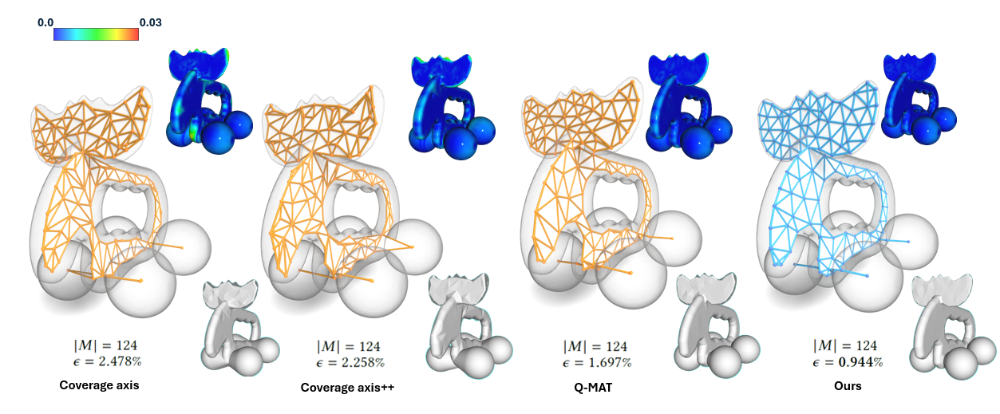
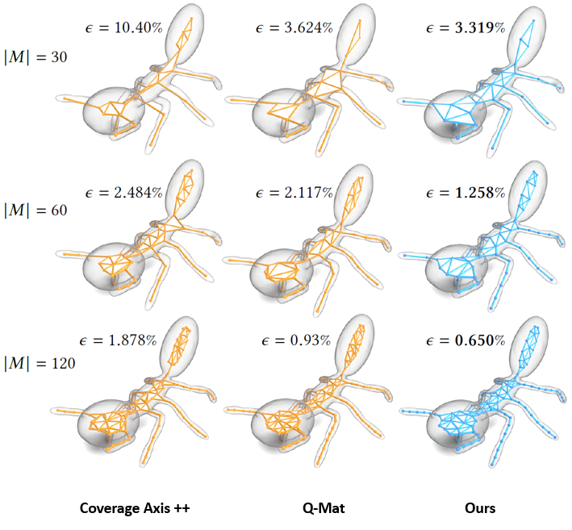
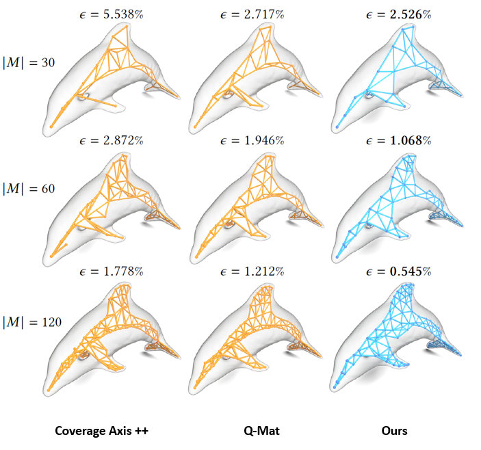

Overview of the method: Starting from a given shape, a first cluster containing all vertices is defined and a first sphere is optimized using our update metric. After the insertion of new spheres, clusters are computed and spheres are updated in an optimization loop. The process stops when the total error meets a given threshold or a pre-defined number of samples is reached. Finally, the connectivity of the medial axis approximation is deduced from the adjacency of the clusters.

Effect of the 𝜆 parameter. Medial spheres and skeleton obtained for a plane model with different values of 𝜆 and different number of medial samples.

Comparison of the results obtained with Coverage Axis, Coverage Axis++, Q-MAT and our method on different shapes (plane, fertility, elk, vase and elephant). Number of medial spheres |𝑀| and reconstruction error 𝜖 are displayed for each model and method. For more comparison, please refer our paper.

